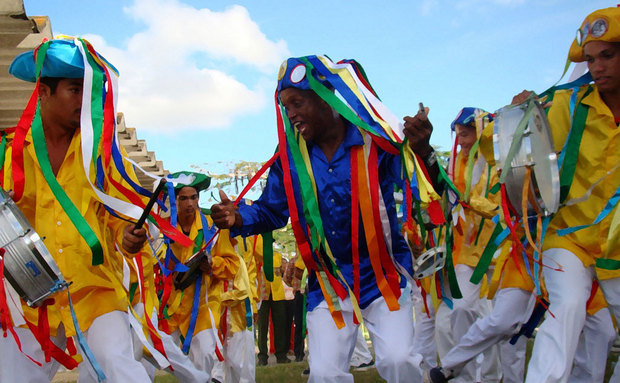

A diversidade do Folclore Sergipano reuni elementos da cultura indígena, africana e europeia. Sergipe guarda na sua história e em sua tradição uma boa parte das culturas portuguesa e negra e apresenta um dos mais ricos folclores do Brasil. São incontáveis as manifestações culturais que nos levam ao passado e garantem, na atualidade, uma permanente conversação entre as mais diversas comunidades responsáveis pela continuidade do folclore sergipano. Aqui, você fará uma viagem pelo que há de mais belo na cultura popular sergipana. Fique conosco! Dentre as diversas manifestações do folclore sergipano destacam-se principalmente: Reisado, Parafusos, Guerreiros, Lambe-Sujos e Caboclinhos, Cacumbi, Taieira, Samba de Parelha e São Gonçalo.
Não se sabe ao certo quase nada sobre a origem do Cacumbi, mas acredita-se que se trata de uma variação de outros autos e bailados como Congada, Guerreiro, Reisado. . O grupo, geralmente, apresenta-se na Procissão de Bom Jesus dos Navegantes e costumeiramente no Dia de Reis. Momento esse que a dança é realizada, em homenagem a São Benedito e Nossa Senhora do Rosário. Pela manhã, alguns integrantes do grupo assistem à uma missa na igreja, onde todos cantam e dançam em homenagem aos santos padroeiros. Depois das louvações, todo o grupo sai às ruas cantando músicas profanas e, geralmente à tarde, acompanham a procissão pelas ruas da cidade. Geralmente seus personagens são o Mestre, o Contra-Mestre e os “dançadores” e “cantadores”. O grupo é composto exclusivamente por homens.
Os componentes vestem calça branca, camisa amarela e chapéus enfeitados com fitas, espelhos e laços. Só o Mestre e o Contra-Mestre usam camisas azuis. O ritmo é forte, o som marcante e o apito coordena a mudança dos passos. Os instrumentos que acompanham o grupo são: cuíca, pandeiro, reco-reco, caixa e ganzá. Em Sergipe, o Cacumbi é encontrado nos municípios de Lagarto, Japaratuba, Riachuelo e Laranjeiras.